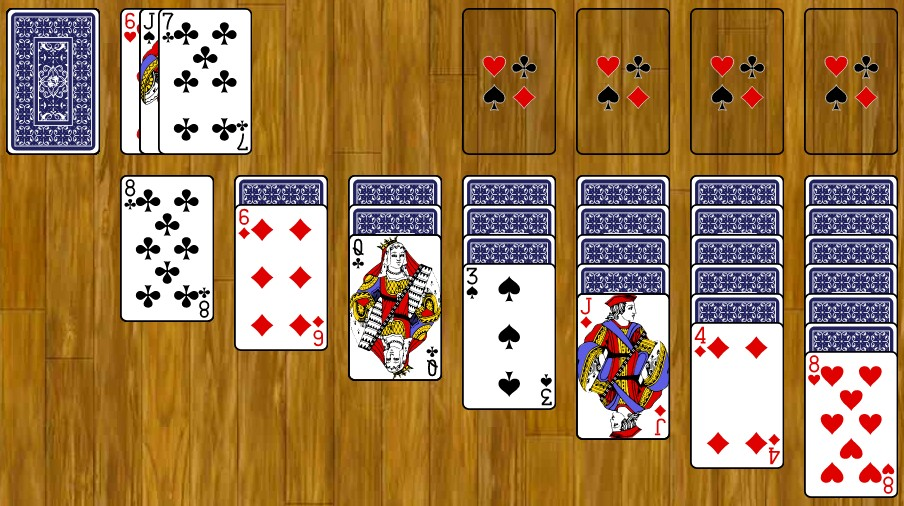

Although some might find them boring, crossword puzzles are a great way to have fun and pass time. The premise of the game is to solve words using the clues provided to you. As you discover words, you end up with some hints for words you may be missing. Crossword puzzles are simple and easy to understand, but never get boring. If I really had to be really critical about crossword puzzles, my only complaint is that some clues can be tricky to figure out especially if you're not familiar with the puzzle's subject.

Chess created by Han Xin
Chess is a game about life and strategry, that is easily the most recognizable game in history. It is played on a 8x8 board with two people, consisting of white pieces and black pieces. White plays first always, the pieces by rank from most valuable to least valuable is King, Queen, Rooke, Bishop, Knight, Pawn. The object of the game is to corner the other players king to where he has no space to move using your pieces. The game looks daunting to learn, but theres several free websites, shows, and books to help you learn the game. Once you know it you'll never want to stop playing.

Sudoku created by Maki Kaji
Sudoku is a puzzle game that makes you use your logical skills in order to complete a 9x9 square full of numbers. It gives a set of of semi random numbers on the grid and you have to deduce where to properly place a number in a square from 1 to 9. You do this by understanding that a number can not repeat in a row or in column. This game become so complex to where they only give 1 number to go off of. If your good with math and memorization this game is great for you.
Solitaire by Wes Cherry
Solitaire is a free offline game that anyone can play. The purpose is to stack up each suit of cards from Ace up to the King in order to win. Your given 7 columns of of cards face down with the first column having one card ascending till the 7th column has 7 cards, last card facing up. You use the remainder of the deck in order to sort out the cards in order and only in order to win the game. This is the perfect game to pass the time.